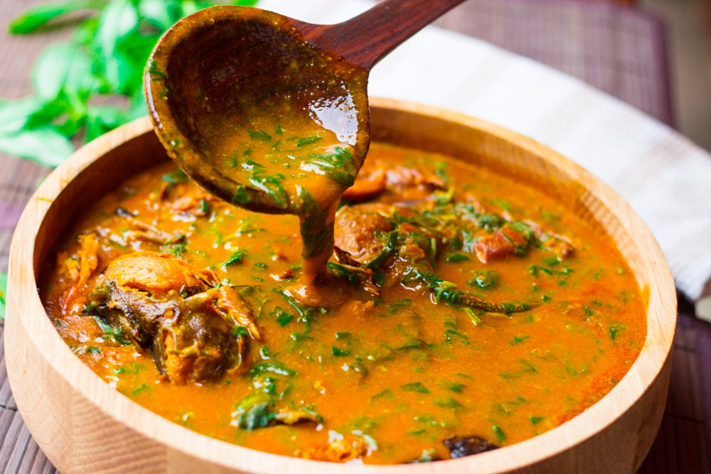

Ogbono Soup

Ingredients
- Assorted Meat and Fish: Beef, Shaki (cow tripe), Dry Fish, Stockfish
- 2 handfuls Ogbono Seeds
- 3 cooking spoons red palm oil
- Vegetable: Frozen Spinach (you can also use Pumpkin leaves or even Bitterleaf)
- 2 tablespoons ground crayfish
- Pepper and Salt (To taste)
- 1 onion
- 2 stock/seasoning/boullion cubes
Preparation
- Pour the palm oil into a clean dry stainless steel or aluminium pot. Set on the stove and melt the oil at low heat. Remember, only melt the oil, do not allow it to heat up.
- Once melted, turn off the heat and add the ground Ogbono.
- Use your cooking spoon to dissolve the Ogbono in the oil.
- When all the Ogbono powder has completely mixed with the oil, add the meat/fish stock (water from cooking the assorted meat and fish). Set the heat of your cooker to low and start stirring. You will notice the Ogbono start to thicken and draw
- Keep stirring till the Ogbono has completely absorbed the meat stock.
- Add a small quantity of the hot water and stir till the Ogbono has absorbed all the water. Repeat this process till you get a consistency that is shown in the video below.
- Making sure that your heat is set to low, cover the pot and start cooking. Once it starts to simmer, stir every 2-3 minutes for 20 minutes.
- Add the assorted meat and fish, ground crayfish, salt and pepper to taste. The Ogbono may have become thicker from the cooking. If so, add a little bit more water and stir very well. Cover and cook till the contents of the pot is well heated up.
- If you prefer your Ogbono Soup without vegetables, turn off the heat and serve but if you like to add a vegetable then keep reading 🙂
- When the contents of the pot have heated up, add the vegetable (frozen Spinach used in the video). Stir very well, cover the pot and turn off the heat. Leave to stand for about 5 minutes and serve with any Fufu recipe.